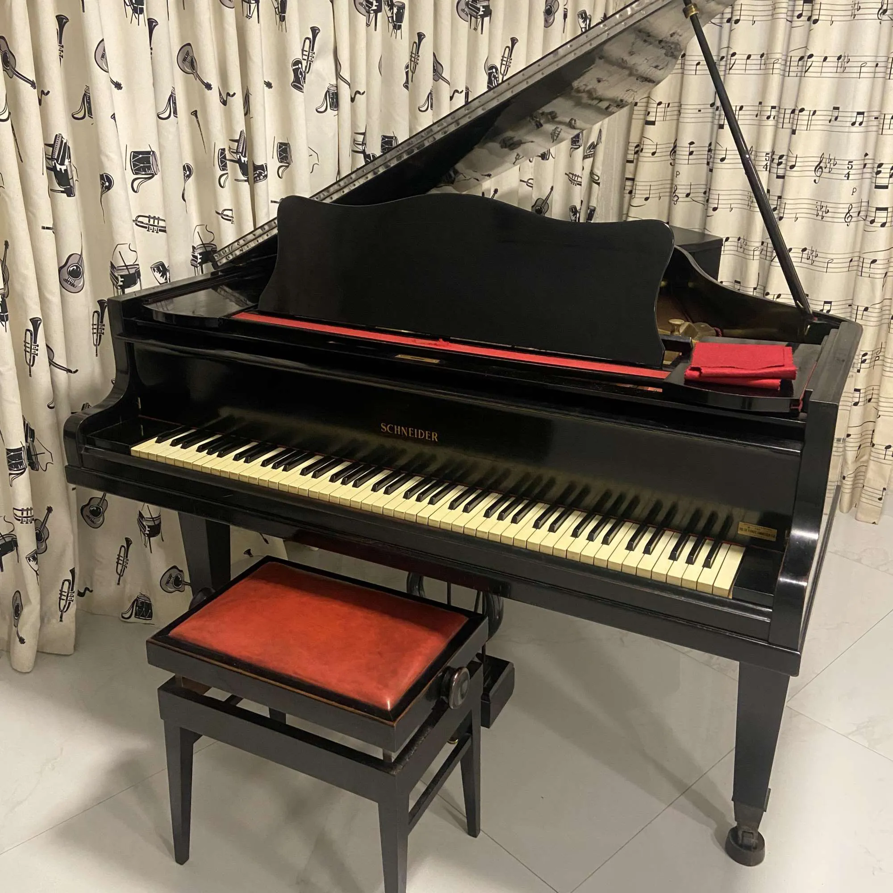

Construção acústica
A construção acústica do piano combina madeira, madeira compensada, e uma moldura metálica que suporta a enorme tensão das cordas. A tampa harmônica e a caixa de ressonância são desenhadas para projetar o som com riqueza de harmônicos.
- Tampa harmônica: design para projeção e cor sonora.
- Estrado metálico: estabilidade para afinação consistente.